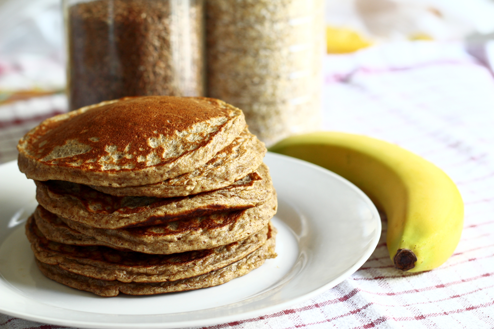

Pancakes

photo by pixabay.com
Ingredients
- 100g plain flour
- 2 large eggs
- 300ml milk
- 1 tbsp sunflowe or vegetable oil, plus a little extra for frying
- lemon wedges, to server (optional)
- caster sugar, to serrve (optional)
Directions
- Put the flour, eggs, milk, 1 tbps oil and a pinch of salt into a bowl or large jug, then whisk to a smooth batter. Set aside for 30 mins to rest if you have time, or stat cooking straight away.
- Set a medium frying pan or crêpe pan over a medium heat and carefully wipe it with some oiled kitchen paper. When hot, cock your pancakes for 1 min on each side until golden, keeping them warm in a low oven as you go.
- Serve with lemon wedges and sugar, or your favourite filling. Once cold, you can layer the pancakes between baking parchment, then wrap in cling film and freeze for up to 2 months.
Recipe by: Cassie Best